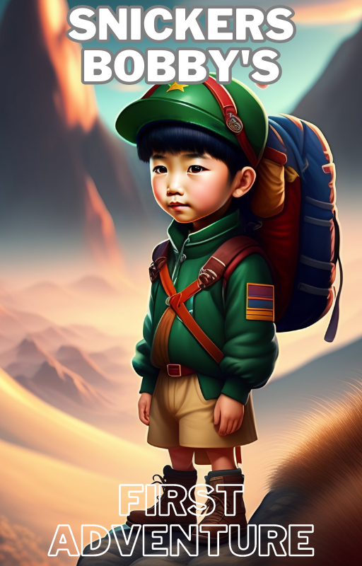

|
Embark on an adventure and free your mind by reading this amazing kids' story.…
“The pages of this kids' story will transport you to a world of magic and wonder, where anything is possible. Free yourself from your everyday worries and let your imagination run wild”
This kids' story is a celebration of freedom. Let the characters “inspire you to break free” from your constraints and live your life to the fullest. Free yourself from fear and doubt and embrace the possibilities.
Dear Friend,
Let’s
face it – kids' stories aren't something that's developed on easy terms. And I don't blame you, sometimes our circumstances such as our age, interests, and cultural background drive us into stick with what we know as a form of norm.
And once we spiral into a maze of negativity, it can be very hard to get out of our disempowering ways of finding good kids' stories.
But
here’s the good news:
Kids' stories are something that CAN be found! You just need to have the right tools and strategies for finding them!
But
before we go into that, ask yourself, have you
ever faced any of these problems in your life?
-Feeling helpless and unable to find kids' stories that your child will enjoy.
-You lack the tools and strategies needed for helping you overcome your lack of information about kids' stories.
-You don't have a proper support system needed to help you find kids' stories that are appropriate for your child's age and interests.
-Or you are totally clueless when it comes to finding kids' stories.
Think
about this...
With so many kids' stories out there, it can be hard to know where to start. And even if you do find a story that your child seems to like, there's no guarantee that they'll stick with it.
Well, you are not alone. I've once walked down this lost path and I told myself that I would do whatever it takes to figure out the key to finding great kids' stories and living a life of freedom.
And after years of experimentation and hardship, I've finally found the solution, which I want to share with you today.
Introducing…

Small Breath of What The Story is About!
The book "Snickers! Bobby's First Adventure" is a heartwarming story about friendship, courage, and overcoming obstacles. It is a great book for children ages 4-8.
Here are some additional details about the book:
|
The book is set in a small town on the coast. |
|
The main characters are Bobby, a young boy, and Snickers, his neighbor's dog. |
|
The book is about Bobby's first fishing trip with his dad. |
|
Bobby falls into the water and is rescued by Snickers. |
|
The book teaches children about friendship, courage, and overcoming obstacles. |
Wait! let me share some more before you decide to buy it:
Bobby is safe, thanks to Snickers. He learns a valuable lesson that day: always pay attention to the waves when you're fishing in the ocean. He also learns that true friendship can save your life.
Wow,
this is too good to be true! Will this cost me
a bomb?
Here’s
the good news, NO.I
want
everybody to be able to have access to this great tools and strategies
for
overcoming the problems of children story, Order your copy of "Snickers! Bobby's First Adventure" today and teach your children about friendship, courage, and overcoming obstacles..
If
you’re still sitting on the fence, here’s 5
great reasons to invest in this eBook!
- It's a great story. The book is well-written and engaging, and it will keep readers entertained from beginning to end.
- It's educational. The book teaches readers about important topics, such as friendship, courage, and overcoming obstacles.
- It's relatable. The characters and situations in the book are relatable to young readers, which will help them connect with the story.
- It's beautifully illustrated. The illustrations in the book are stunning and will capture readers' attention.
- It's a great gift. The book is a thoughtful and unique gift for any child.
So
how much
will this cost you?
REAL
WORLD
VALUE IS
£12.85
But hey, like I said. I want EVERYBODY to be able to afford this
amazing eBook because the value it provides is literally
mind blowing!
So, I’ve decided to lower the costs of this product.
Hence, your total investment in this Snickers! Bobby's First Adventure Is:
£12.85
Now Only
£9.25
(This is a digital download. You will instantly be directed to the
download
page upon purchase)
Best Wishes,
Kellspell
P.S. Hurry! This Offer is only up for the next 50 fast action takers!
We don’t
want you to miss out on this amazing opportunity!
P.P.S Remember, It’s how much you will gain, investing your time with your kids
P.P.P.S If you’re sick of relapse over and over again,
perhaps this is the best
time and tools to make the change.
|